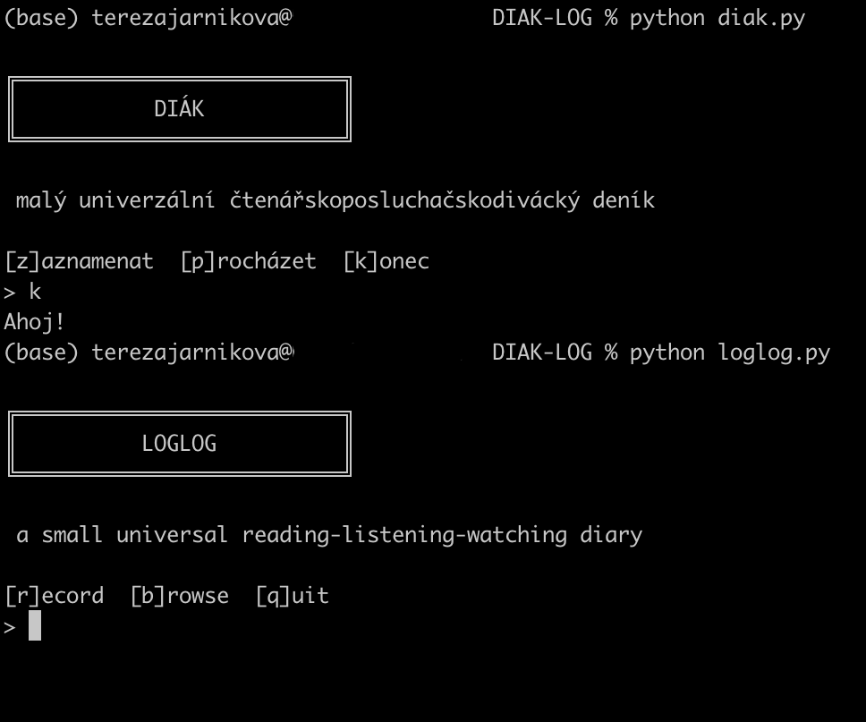

← back // zpět ←
2025-11 | Language has betrayed us
Some months are better than others as far as recreational thinking goes, which is to say, short and delayed notes this month.
The Global Carbon Budget for 2025 came out. The GCB is an international effort to track how the world’s carbon stocks are changing — how much carbon we emit, how much gets taken up by land and oceans, etc. (I do a small part on it — I calculate our team’s estimate of the ocean carbon sink. This year one big punchline is that, dispiritingly, carbon emissions have not peaked and continue to increase.) I find these big collaborative science projects quite sense-making: take a big, difficult problem (“how much carbon is there in the world, where, and how is it changing”) and triangulate the answer carefully/collectively. It’s a concerted effort to see how things are. In the face of any number of competing narratives, some of which defy gravity, this is actually very bracing: we all have our own feelings, but we share one physical reality. Maybe the most powerful response to intentional and unintentional overwhelm is to be very deliberate about what we pay attention to.
I built a tiny diary-log for remembering things I read/listen to. In python, in the command line, in Czech and English. (Maybe best for people who find the command line comforting, but I’m starting to know a lot of people like that.)

A saying from Britain that I hadn’t heard before, from one of those live-until-95-Guardian-readers: “Do it. Do it right. Do it right now.” A helpful compass, maybe, with the caveat that some days aren’t like that. (Another one in this vein is “Never complain, never explain.” I’m not much like this, I probably complain more than I should and explain far more than I owe. Someone else once said “Don’t complain unless it’s funny”, which I can more get behind.)
It is sideways rain month, and I have bought a month of a relatively expensive sauna membership and intend to go so often that it becomes cheap. The sensation of wooden heat is great, of course, as are the sensations of very cold water, herbal tea, and fire, but I think I go mostly to have a space and time in which to do absolutely nothing. (I’m also intermittently reading Jenny Odell’s How to do nothing, which is very nice — not a self-help book but a gentle, steadying consideration of how to stay in the world without being caught up in “the algorithm” (shorthand)). Other possible Nordic winter modalities include kalsarikännit (Finnish for getting drunk in one’s underwear, which I’m not doing but which I enjoy as a word and as a concept; I did probably drink too much of the wine meant for the stew the other night), or the Norwegian response to how are you: up and not crying.
Sam Kriss, again, sorry — What's the point of words? For a reminder that you cannot, in fact, exhaustively explain the world through language (thank G-d). Semi-annoyingly, among the best things I’ve read in a while.
So: language has betrayed us. Now what? What can language do, besides simulate reality? There are the various perlocutionary acts, persuading, forbidding, seducing, offending, and so on. Language mediates social games and forms the structure of subjectivity. It throws up its own internal problems that can be solved or expanded for fun and profit. It has a shibboleth function, which allows you to distinguish between friend and enemy based on whether they use words like hegemony or not. Some of these intersubjective functions are not always particularly positive, and definitely not useful to philosophy. But others are. We can still use language to access objective reality, as long as we’re prepared to let it take a more active role than straightforward description. Language, and especially philosophical language, changes how the world discloses itself to us.
Hezký rozhlasový pořad o ptactvu
The child has been keeping entertained by jumping/crawling/etc around to Shostakovich's waltzes, which is very funny. (Someone told me that everyone tells you children are wonderful, etc, but no one tells you that they're funny, which is a good point. Unrelatedly, a nice thing on the internet is reading the comments under music: I just completed ear surgery and gained my hearing back… This music was worth it.)
J lent me Arts of the Eskimo, which is striking and somehow rhymes with the current season. Here's a print called Woman With Monster:

Be your own Woman With Monster, really.